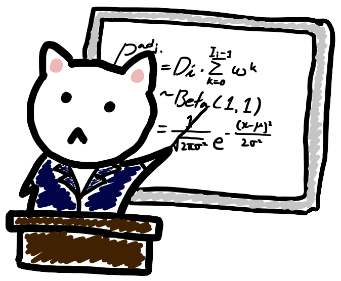

1/ Quartoとは
Quartoを使った研究成果と分析プロセスの共有
宋財泫（関西大学）
自己紹介

- 氏名：宋財泫
- 所属：関西大学総合情報学部 准教授
- 博士（政治学; 神戸大学）
- https://www.jaysong.net/
- songkansai-u.ac.jp
1 Quarto?
まずはR Markdownから

- {knitr}（2012年頃）と{rmarkdown}（2014年頃）パッケージの登場
- Rのコードと結果、文章が一つの文書としてまとめたものを生成
- HTML、Microsoft Word、PDF等
- 外部パッケージを使用することで様々な出力物が作成可能
- スライド（{xaringan}）、ホームページ（{blogdown}）、書籍（{bookdown}）など
- R + Markdown \(\rightarrow\) Markdownって何?
プレーンテキストとリッチテキスト
- Plain text：純粋なテキストのみで構成されている文書（図表、書式情報\(\times\)）
- macOSのテキストエディット、Windowsのメモ帳、VS Code、Vimなど
- Rich text：テキストだけでなく、書式情報、図表なども含まれる文書
- 書式情報の例: 文書の余白、行間の幅、文字サイズ、太さ、色
- Microsoft Word、Apple Pages、LibreOffice Writer、一太郎など
- リッチテキストには文字情報以外にも様々な書式情報が含まれているため、サイズが大きく、パソコンへの負担も大きい（\(\doteqdot\)
.xlsxvs..csv）
プレーンテキストからリッチテキストへ
- Markup言語：プレーンテキストをリッチテキストへ変換するための言語
- HTML（HyperText Markup Language）が代表的
- 例1）
<b>と</b>で囲まれた文字は太字として出力される。 - 例2）
<a>と</a>で囲まれた文字はリンクであり、<a>のhref引数で指定されたリンク先へ飛ばされる。
- 例1）
- Webブラウザ（Firefox、Chrome、Edge、Safari等）はプレーンテキストであるHTMLをリッチテキストへ変換するエンジン（Gecko、Blink、WebKit等）を搭載している
Input:
Output:
この文字は太字にしましょう。
ここをクリックしてください。
Markdownとは
- Markdown（）: Markup言語の軽量版
- 文章作成に必要なタグ（tag）を、より簡単に記述できる。
Markupの場合（HTML）
Markdownの場合
結果
この文字は太字にしましょう。
ここをクリックしてください。
Markup vs. Markdown（表）
Markup vs. Markdown（箇条書き1）
Markup vs. Markdown（箇条書き2）
Quartoの登場
2026年2月現在、QuartoはR Markdownの（ほぼ）上位互換だと考えても良い

- 2022年7月登場（Ver. 1.0）したR markdownの後継
- 読み方は「クゥオート」（クワトロじゃない）
- 断片化されつつあるR Markdown生態系を一つに統合したもの
- R Markdown界隈の{blogdown}、{bookdown}、{xaringan}、…
- Quartoは別途のパッケージ不要
- R以外の言語、knitr以外のエンジンも使用可能
- R Markdownと使い方はほぼ同じ
2 Why Quarto?
なぜQuarto/R Markdownを使うか
Quarto/R Markdownは文芸的プログラミング（literate programming）のツール
- 文芸的プログラミング：ソースコードとドキュメントを別々のファイルに記入せず、一つのファイルでまとめるプログラミングのスタイル
- 既存の「コード + コメント（
#、//、<!-- ~ -->、…）」より発展した概念 - プログラミングの界隈では流行らなかったが…
- 既存の「コード + コメント（
学術研究における文芸的プログラミングとは…
- 「何をしたか（code）」と「そこから何が得られたか（result）」、「説明（narrative; なぜそうしたか、その結果は何を意味するか、…）」を同じ場所に記述すること
- 例）既存のやり方：Rで分析し、推定結果や作成した図をLaTeX、Wordに貼り付けながら論文や資料を作成
- 例）文芸的プログラミングのやり方：Quarto
文芸的プログラミングのすゝめ
- 「手作業」の排除によるエラー防止（自動化）
- 分析プロセスの透明化
- バージョン管理システムとの親和性
- 環境依存性の記述とポータビリティ
| 従来のツール（R + Word） | Quarto | |
|---|---|---|
| プロセス | 手作業の連続（分断） | コードによる自動化（統合） |
| 変更への対応 | 最初からやり直し（高コスト） | 再実行のみ（低コスト） |
| 透明性 | 操作履歴が見えにくい | コードですべて可視化される |
| 再現性 | 低い（人の記憶や手作業に依存） | 高い（データとコードがあれば再現可能） |
\(\Downarrow\)
QuartoやR Markdownを使用すると「分析結果」だけでなく「分析のプロセスそのもの」を成果物として保存・共有できる文書生成の流れ（R Markdownの場合）
R&Knitr使用を前提として開発され、拡張されていくR Markdown

文書生成の流れ（Quartoの場合）
複数言語&エンジン使用を念頭において開発されたQuarto

言語、エンジンの豊富さ
Quarto公式HPのFAQ for R Markdown Usersにより
(…) Quarto is at its core multi-language and multi-engine (supporting Knitr, Jupyter, and Observable today and potentially other engines tomorrow). (…) Quarto was developed to be multilingual, beginning with R, Python, Javascript, and Julia, with the idea that it will work even for languages that don’t yet exist.
- 使用可能な言語：R、Python、Julia、Javascript、…
- 使用可能なエンジン：Knitr、Jupyter、Observable、…
- その他：PDF作成の際、\(\LaTeX\)でなくtypstも使用可能
生態系の統合
詳細な例は公式ホームページを確認
- ただし、Quartoは外部のパッケージでなく、拡張機能（extensions）が存在
- ダッシュボードの作成やShinyとの統合もOK
R Markdown
| 目的 | 必要パッケージ |
|---|---|
| 文書 | 不要 |
| 書籍 | {bookdown} |
| スライド | {xaringan} |
| ホームページ | {blogdown} |
| ポスター | {posterdown} |
Quarto
| 目的 | 必要パッケージ |
|---|---|
| 文書 | 不要 |
| 書籍 | 不要 |
| スライド | 不要 |
| ホームページ | 不要 |
| ポスター | ??? |
研究成果の共有ツールとしてのQuarto
研究成果の共有方法
- 文書（論文、報告書、レポート、書籍、…）
- 学会発表のためのスライド、ポスター
- 再現/再生可能な研究のための再現用コード
- ウェブサイト、ダッシュボード、ウェブアプリケーション
Quartoの役割
Quarto一つでは以上のすべて（実はほとんど）が作成できる
- 基礎的なMarkdown知識を身につければonline appendix、supplementary material、Harvard Dataverse用の再現用コードが作成可能
- 静的ドキュメント（PDF等）だけでなく、HTMLベースの動的ドキュメントも
- 文書とスライドは片方を作っておけば、少しの修正で切り替えも可能
3 コース概要
コース概要
進度によって内容が若干変わることがある。
- Quartoとは & R Markdownとの比較
- 実習環境の導入
- Markdown文法の基礎
- 文書の作成
- スライドの作成
- 作成した文書・スライドの共有
到達目標
- Markdown文法が分かる。
- Quartoで再現・再生用ファイルが作成できる。
- PDF文書が作成できる。
- QuartoでHTMLスライドが作れる。
- 作成した文書、スライドが共有できる。
- より複雑なプロジェクトに取り組むための基礎知識を習得する。
- Quarto公式のガイド/レファレンスを読めば応用できるようになる。
コース資料の入手先
Quartoとは